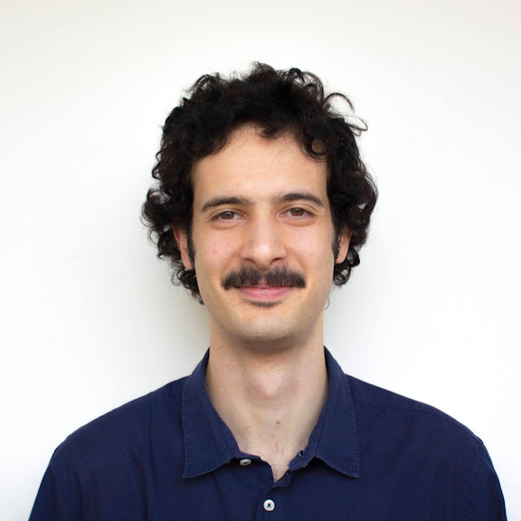

Pietro Sabelli

sabelli@flu.cas.cz |
GitHub |
CV
I am currently a postdoc at the Department of Logic
of the Institute of Philosophy of the Czech Academy of Sciences working with Ansten Klev.
My research focuses on dependent type theories as foundations of mathematics, investigating both their syntax – explored with the help of proof-assistants such as
Agda – and their semantics – primarily through the categorical notions
of doctrines and fibrations. In particular, I am interested in the Minimalist Foundation
as a common core for the plurality of foundational systems for mathematics.
In 2024, I defended my PhD thesis in Mathematics
Around the Minimalist Foundation: (Co)Induction and Equiconsistency
under the supervision of
Maria Emilia Maietti
and Samuele Maschio.
Publications
-
A topological reading of coinductive predicates in Dependent Type Theory.
Mathematical Structures in Computer Science. To appear.
(Agda code)
-
Equiconsistency of the Minimalist Foundation with its classical version.
With M. E. Maietti.
Annals of Pure and Applied Logic,
Volume 176, Issue 2,
2025
-
A topological counterpart of well-founded trees in dependent type theory.
With M. E. Maietti.
Electronic Notes in Theoretical Informatics and Computer Science, Volume 3, 2022. Proceedings of MFPS XXXIX.
(Agda code)
-
On the Compatibility Between the Minimalist Foundation and Constructive Set Theory.
With S. Maschio.
Revolutions and Revelations in Computability. CiE 2022. Lecture Notes in Computer Science, vol 13359. Springer, Cham.
Selected Talks
-
A Two-level Foundation for the Calculus of Constructions
TYPES 2025. Glasgow, Scotland. 11 June, 2025.
(Slides)
-
On the conservativity of type theories with classical logic over arithmetic
EuroProofNet WG6 meeting. Genova, Italy. April 18, 2025.
(Slides)
-
A topological reading of (co)inductive definitions in Dependent Type Theories
Workshop on Homotopy Type Theory/Univalent Foundations. Leuven, Belgium. April 4, 2024.
(Slides)
Other
- The Editor – a sandbox platformer where the game world consists of the game's own source code. The player has the ability to modify the world and to reflect the changes in the code.